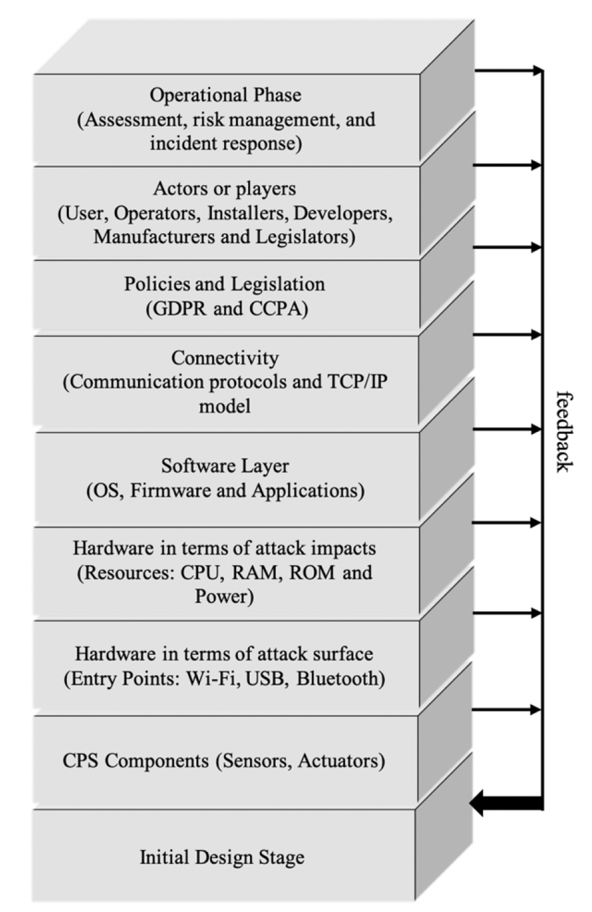

Collaborative Learning Discussion 1
Compromising a Medical Mannequin.
Initial Post
Computer networks are not the only ones that can be compromised with cybersecurity threats. As the paper “Compromising a Medical Mannequin” demonstrates, medical systems that can be considered as IOT systems can be affected too. The mannequin iStan is a medical device used for training purposes by students at the University of South Alabama. As described, students were able to identify software vulnerabilities that allowed them to perform threats to elevate user privileges by performing a brute force attack (obtaining valid user and password) and denegate service to the software application by simulating false entry signals (Glisson et al. 2015).
Honeypots are an alternative proposed to mitigate brute force and denegation of service attacks in IOT systems that are connected to a network such as medical equipment. Honeypots are security tools that block network access to an attacker and deceive him/her by allowing infiltration to a false image of the real system that allows the network administrator to monitor the activity and personal information of the attacker such as his/her IP address. In the case of the medical mannequin, threats could be identified before the attacker is able to infiltrate the medical equipment (Arif et al. 2019).
References:
Glisson, W., Andel, T., McDonald, T., Jacobs, M., Campbell, M. & Mayr, J. (2015) Compromising a Medical Mannequin. Healthcare Information Systems and Technology (Sighealth)
Arif, N., De Rosal, I., Eko, R., Christy, S. (2019). Website and Network Security Techniques against Brute Force Attacks using Honeypot. Available: https://0-ieeexplore-ieee-org.serlib0.essex.ac.uk/stamp/stamp.jsp?tp=&arnumber=8985686 [Accessed 14 November 2021]
Bhagyashri, T., Hetesh, S., Rohan, N., Behnam, D., Yuhong, L. (2020). The Impact of DoS Attacks onResource-constrained IoT Devices:A Study on the Mirai Attack. Available: https://arxiv.org/pdf/2104.09041.pdf [Accessed 14 November 2021]
Peer Response 1
The medical industry and medical equipment has brought infinite advantages to the life of human being. Nevertheless, these devices can represent a double-edged sword, on one hand healthcare treatments have improved considerably, but in the other hand these advancements have opened a wide space of opportunities to cybercrime (Yaqoob and Atiquzzaman, 2019).
Security in medical equipment should be considered as highly relevant. These devices transmit and receive personal information that by nature should be confidential (Yaqoob and Atiquzzaman, 2019). The exposure of personal health data of someone such as drug abuse, mental disability, chronic and sexual transmission diseases could cause discrimination, loss of employment and social rejection (Al-Salqan, 1998). That why hackers have taken advantage of software vulnerabilities to perform frauds and extortions attacking the confidentiality, integrity and availability of healthcare data.
The great majority of medical equipment can be considered as systems with limited resources. Many of their vulnerabilities can be related with the lack of incorporation of security measures during their development, possibly because of the physical constraint of being able to add these measures. In addition, legacy software and medical hardware is still used and when they were developed no security threats were foreseen (Yaqoob and Atiquzzaman, 2019). As cyber threats continue to grow interest in the medical industry cybersecurity measures should evolve accordingly to combat and cover vulnerabilities in software and hardware of medical devices.
References:
Yaqoob, T., Atiquzzaman, M. 2019. Security Vulnerabilities, Attacks, Countermeasures, and Regulations of Networked Medical Devices. Available from: https://0-ieeexplore-ieee-org.serlib0.essex.ac.uk/stamp/stamp.jsp?tp=&arnumber=8703068&tag=1 [Accessed 16 November 2021].
Al-Salqan, Y. 1998. Security and confidentiality in healthcare informatics. Available from: https://ieeexplore.ieee.org/stamp/stamp.jsp?tp=&arnumber=725720 [Accessed 20 November 2021].
Peer Response 2
Accordingly, to Yaqoob and Atiquzzaman (2019) vulnerabilities and threats in medical devices such as the iStan mannequin are strongly related to communication protocols, design flaws in software and inappropriate security measures added during development.
For example, Man in the Middle (MITM) is an attack that occurs when someone intercepts the communication between a transmitting and a receiving node. The attacker deceives node 1 and node 2 by making them believe that communication is flowing in a secure channel, but attacker can intercept and modify the information flowing through it (Conti et al. 2016). Bluetooth Low Energy (BLE) a protocol alternative to Bluetooth is used by a wide variety of medical devices. It offers low power consumption and short latency periods, ideally for devices where battery life is important and sensed data accuracy is critical. Because of lack of robust authentication mechanisms, devices using BLE are susceptible to MITM attacks (Yaqoob and Atiquzzaman). Classen et al. (2018) demonstrated that measured data, credentials and private information from wearable medical devices using BLE was intercepted by using a customized app and connecting to the devices.
Regulations and mitigation techniques have been enforced in order to prevent personal health information to be leaked. One of those regulation is HIPAA (Health Insurance Portability and Accountability Act) that protects personal health information by requiring suitable privacy-related controls (Annas, 2003). Because of the limited availability of resources in medical devices security mitigation techniques are challenging to incorporate. Some of them proposed are Isolation-Based architecture and Data Flow Integrity mechanisms. The first consists on isolating sensible security parts of the system in an unreachable module and the last on verifying unchanged states of memory using pointers (Yaqoob and Atiquzzaman).
References:
Yaqoob, T., Atiquzzaman, M. 2019. Security Vulnerabilities, Attacks, Countermeasures, and Regulations of Networked Medical Devices. Available from: https://0-ieeexplore-ieee-org.serlib0.essex.ac.uk/stamp/stamp.jsp?tp=&arnumber=8703068&tag=1 [Accessed 16 November 2021].
Conti, M., Dragoni, N. 2016. A Survey of Man In The Middle Attacks. Available from: https://0-ieeexplore-ieee-org.serlib0.essex.ac.uk/stamp/stamp.jsp?tp=&arnumber=7442758 [Accessed 22 November 2021].
Classen, J., Wegemer, D., Patras, P., Spink, T., Hollick, M. 2018. Available from: https://0-dl-acm-org.serlib0.essex.ac.uk/doi/pdf/10.1145/3191737 [Accessed 22 November 2021].
Annas, G. 2003. HIPAA Regulations — A New Era of Medical-Record Privacy? Available from: https://www.nejm.org/doi/pdf/10.1056/NEJMlim035027 [Accessed 22 November 2021].
Summary Post
Connectivity of embedded systems to a network and its interaction with other systems and the physical world have created the Internet of Things (IoT) network (Dhillon and Sheetal, 2016). In one hand IoT devices has given wide advantages to humanity, but in the other it has widened the attack surface for attackers with malicious intentions (Yaqoob et al. 2019). In the case of study presented it was possible to appreciate the vulnerabilities of a medical device, that can be considered as an IoT device.
Compared with conventional systems such as computers and networks, IoT devices (composed of embedded systems) generally have limited computational resources, operate with low power, are reduced in size, are low cost and are designed to execute specific tasks. Implementing security measures in these systems is a complex challenge not because they do not exist, but they can demand system resources and higher costs (Abdulmohsan et al. 2021). Attackers normally use a combination of the mentioned characteristics to exploit vulnerabilities, such as in the mannequin example were a denial-of-service attack was conducted by consuming the system resources and a brute force attack by trespassing not efficient encryption mechanisms (Glisson et al. 2015).
Connecting an IoT device to a network makes things worse, because it makes them vulnerable to unpredictable cyberthreats as any other device (Abdulmohsan et al. 2021). Using technologies such as honeypots, firewalls or intrusion detection mechanisms on the network can prevent the attacker reach the vulnerable device (Arif et al. 2019). Nevertheless, having a clearer overview of the threats and vulnerabilities involved from the start of the development of the IoT device is more effective. “Security by Design” approach can help reducing the security risks by detecting vulnerabilities and dedicating enough security resources in early stages of the development life cycle (Abdulmohsan et al. 2021).
The Multiple Layers Feedback Framework of Embedded System Cybersecurity (MuLFESC) adopts the “Security by Design” approach and can be used to analyze potential threats and vulnerabilities through each one of its 9 layers, therefore improving the security design of the system (Abdulmohsan et al. 2021).

References:
Abdulmohsan, A., Hongmei, H., Carl, S., Muhammad, A., 2021. Analytical Review of Cybersecurity for Embedded Systems. Vol 9, Pp 961-982. Available from: https://ieeexplore.ieee.org/stamp/stamp.jsp?tp=&arnumber=9300139 [Accessed 23 November 2021].
Yaqoob, T., Abbas, H., Atiquzzaman, M., 2019. Security Vulnerabilities, Attacks, Countermeasures, and Regulations of Networked Medical Devices—A Review. Available from: https://0-ieeexplore-ieee-org.serlib0.essex.ac.uk/stamp/stamp.jsp?tp=&arnumber=8703068&tag=1 [Accessed 18 November 2021].
Arif, N., De Rosal, I., Eko, R., Christy, S. (2019). Website and Network Security Techniques against Brute Force Attacks using Honeypot. Available: https://0-ieeexplore-ieee-org.serlib0.essex.ac.uk/stamp/stamp.jsp?tp=&arnumber=8985686 [Accessed 14 November 2021].
Dhillon, P., Kalra, S., 2016. Elliptic curve cryptography for real time embedded systems in IoT networks. Available from: https://0-ieeexplore-ieee-org.serlib0.essex.ac.uk/stamp/stamp.jsp?tp=&arnumber=7993462 [Accessed 19 November 2021].
Glisson, W., Andel, T., McDonald, T., Jacobs, M., Campbell, M. & Mayr, J. (2015) Compromising a Medical Mannequin. Healthcare Information Systems and Technology (Sighealth).